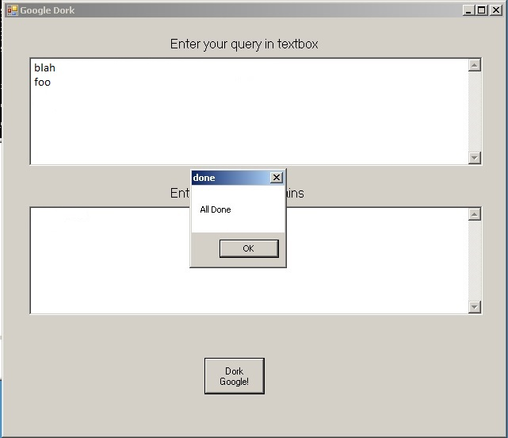
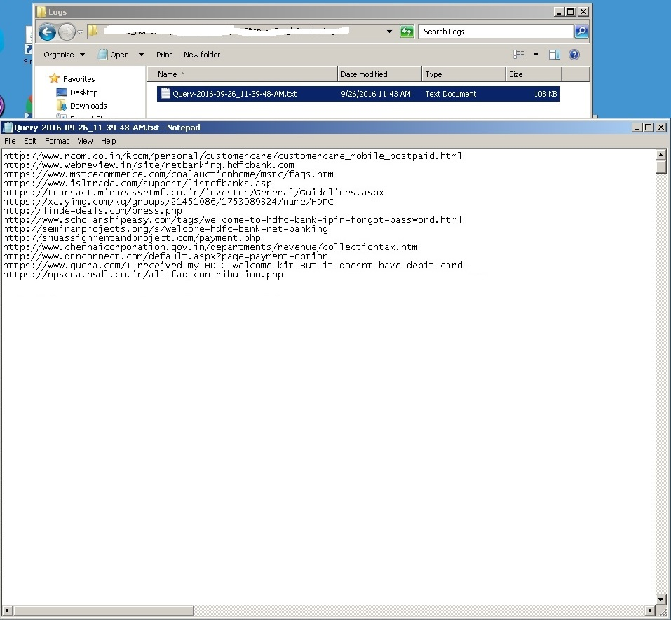

1. Open Google Chrome browser and enter to Google.co.il
(if you want to search different Google site, more details in "Notes" section)
2. on buttom right click 'Settings' and then 'Search Settings'
3. choose 'Never show Instant results' option , and increase the bar to 100 results per page.
4. click 'save'.
1. enter your query in the first textbox, and the whitelist domains in the second textbox. (only domains, without 'www') and click 'Dork Google'.
2. Check if you want to scan only the first page (otherwise it will scan all pages per query).
2. the application will enter to google chrome and start working... when a captcha page will appear as below, solve the captcha click submit, and after than click 'OK'.
and the script will continue working after few seconds.
3. when the application finish quering google, the browser will close and 'All done' messgae will appear, click 'OK'.
4. enter to the 'Logs' folder - you will see your result as 'Query-YYYY-MM-DD_HH-MM-SS-TT' and your'e done. :)
1. when you are running the application - please close every instance of Google Chrome browser otherwise it won't work and throws an execption.
2. if you wish to search in different Google site, you can change the 'googleWebsiteAddress' value in the .config file , dont forget to setup Google setting (disable instant search and increase the bar to 100 results per page, as described above) for the new google site you've entered.